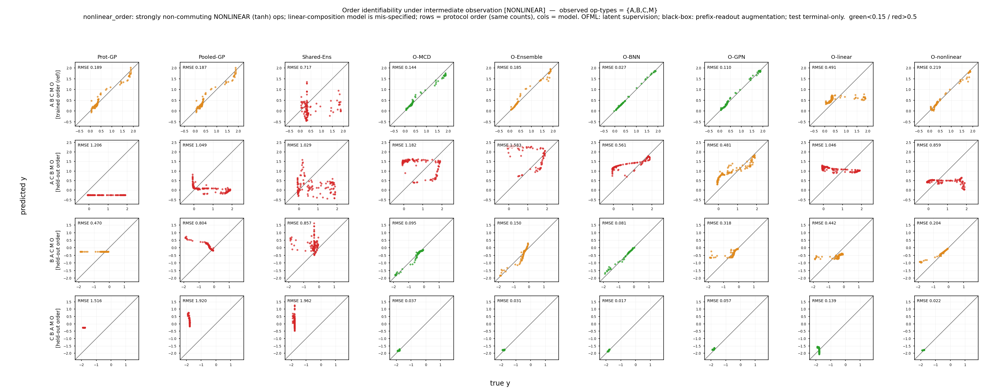

Claim 1 · Intermediate observation repairs the identifiability limit
Even under nonlinear order stress, intermediate observation at training time actually repairs the identifiability limit of composed OFML. Without observation (\(\varnothing\)), all four composed OFML variants remain at per-proto NRMSE ≈0.44–0.65, but giving full observation \(\{A,B,C,M\}\) at training time lowers this to ≈0.17–0.36. Decisively, most of this improvement is obtained by observing just a single operation type (i.e., full observation is not required), and the count-descriptor black boxes together with the misspecified linear composition show no improvement at all even given the same observation. These three asymmetries show that intermediate observation is an identifiability signal that works only for surrogate models able to represent operations compositionally.

nonlinear_order) intermediate-observation ablation. Rows = holdout order, columns = models, horizontal axis = observation subset \(S\subseteq\{A,B,C,M\}\) (all \(2^4=16\) cases). The count-descriptor baselines (Shared-Ens / Pooled-GP) stay flat; composed OFML improves monotonically from \(\varnothing\to\) observation, and most of the improvement is achieved by observing a single operation type. Click to enlarge.This page supports Claim 1, "Intermediate observation repairs the identifiability limit," on the order task under nonlinear semantics. Recording intermediate states at training time can supply the identifiability signal that terminal-only measurement lacks — but this works only for surrogate models that can represent operations compositionally, and is inactive both for the count-descriptor black boxes and for the misspecified linear model that cannot represent the true map. Figure 8 shows that the observation effect established in Figure 7 (linear order) also holds under nonlinear semantics, and moreover that the order structure that terminal-only measurement could not identify is largely recovered with minimal (single-operation-type) intermediate observation (full observation is not required).
We rerun the order design of Figure 3b under each observation subset \(S\subseteq\{A,B,C,M\}\) (all \(2^4=16\) cases) with the nonlinear semantics nonlinear_order. Intermediate observation is used only at training time, and evaluation is terminal-only (analogous to nondestructive measurement that does not alter the sample). Reporting follows the traceablation2 protocol. source: 12 protocols; target: 3 holdout orders; observation noise \(\sigma=0.02\). The metric is the per-proto NRMSE averaged over holdout orders (averaged over 3 holdout orders × 3 seeds, sweeping the 16 subsets), comparing from no observation \(\varnothing\) to full observation \(\{A,B,C,M\}\). Table 3 summarizes the two endpoints \(\varnothing\) and full observation, and the text notes the single-operation-type effect.
* Corrections from the previous version: (1) NRMSE normalization — each target is normalized to its own scale (unit y-std). Because the trace-ablation in this figure originates from per-proto RMSE data, it corresponds to "RMSE (≈ NRMSE)" and the values can be read directly as NRMSE. (2) Addition of the misspecified linear — we add OFML-linear, which is mismatched to the nonlinear ground truth, as a control, exposing that observation "works only for an expressive surrogate." (3) Sweeping the uncertainty backbone — keeping the composition skeleton shared, we confirm robustness across four variants: BNN / GP output layer / MC-Dropout / deterministic point estimate.
| Model | Structure | Uncertainty / representation | Type |
|---|---|---|---|
OFML-BNN | Composition net + Bayesian NN (weight posterior, variational approximation) | Predictive variance from the variational posterior | Composed (nonlinear) |
OFML-GPN | Composition net + GP output layer (deep kernel) | GP posterior variance | Composed (nonlinear) |
OFML-MCD | Composition net + MC-Dropout | Dropout sample variance | Composed (nonlinear) |
OFML-nonlinear | Composition net (deterministic, point estimate) | Point estimate (no variance) | Composed (nonlinear) |
Shared-Ens | Deep ensemble on operation count descriptors (order-blind) | Ensemble variance | Black box |
Pooled-GP | Pooled GP on count descriptors (order-blind) | GP posterior variance | Black box |
OFML-linear | Linear composition (mismatched to the nonlinear ground truth) | Point estimate | Misspecified (composed but insufficiently expressive) |
The metric is the per-proto error averaged over holdout orders. Normalizing each target by its own scale \(s_p\) (unit y-std) yields NRMSE, \[ \overline{\NRMSE}(S)=\frac1{|\Pcal_{\mathrm{ho}}|}\sum_{p\in\Pcal_{\mathrm{ho}}}\frac{\sqrt{\mathrm{mean}_x\,(\mu_p(x)-f_p(x))^2}}{s_p}\ \approx\ \frac1{|\Pcal_{\mathrm{ho}}|}\sum_{p\in\Pcal_{\mathrm{ho}}}\RMSE_p(S), \] where \(\Pcal_{\mathrm{ho}}\) is the set of holdout orders (\(|\Pcal_{\mathrm{ho}}|=3\)), \(\mu_p\) is the terminal prediction, and \(f_p\) is the ground truth. Because the trace-ablation in this figure originates from per-proto RMSE data it is labeled "RMSE (≈ NRMSE)," but each target is already normalized to unit y-std and thus coincides with NRMSE.
Intermediate observation is realized by placing an observer module O_op at the position of each observed operation type op ∈ S (S ⊆ {A,B,C,M}) and observing its output only at training time. What O_op observes is the true 2-dimensional state immediately after that operation is applied state*_op = s_v† = F_op†(z_v†) (post-op, noise-free) — that is, O_A observes "(s₀,s₁) immediately after applying A" and O_M observes "the state immediately after applying M." D does not appear in these protocols, and the terminal observer O is already observed at the terminal, so it is not included in S.
OFML side (composed model): to each observed operation type we attach a separate per-operation-type learnable observer O_op : ℝᵈ→ℝ² (linear, no bias), and add the auxiliary loss Σ_{op∈S} ‖O_op(s_op) − state*_op‖² to the terminal loss (a 2×2 alignment when d=2, a d→2 projection when d>2). We do not use a single shared alignment in order to remove its gauge freedom (the nonidentifiability between contractive/expansive realizations) and to suppress the count C^k blow-up.
Parallel, nondestructive side branch: the main composition stream propagates the latent s ← g_θ_op(s) keeping it d-dimensional, and a downstream operation (e.g., B) receives the latent s itself from the preceding stage (e.g., A). O_op(s) is merely a parallel readout head that maps the latent at that point to 2 dimensions; it only supplies the auxiliary loss and does not overwrite s. Therefore O_A is not connected to B, the forward graph and the composition are unchanged even with observation added, and observation acts only as an additional gradient constraint on the latent (analogous to nondestructive measurement that does not alter the sample). In models with d>2 the latent holds more information than the 2 observed dimensions, and O_op learns its d→2 projection.
The black-box side has no observer: since it has no accompanying latent module, we supply the same information via a prefix-readout extension — for each observed position t, we add a training row that observes the terminal readout of the prefix protocol op₁ … op_t O as a scalar y = readout(state*_after_t). Thus O_A, O_B, O_C, O_M are OFML-only, and the black boxes receive only the scalar readout of the prefix.
Figure 8 is the nonlinear version of the order task (nonlinear_order). source: 12; target: 3 holdout orders. The observation subset S ⊆ {A,B,C,M} is observed only at training time (evaluation is terminal-only).
| Element | Value | Property |
|---|---|---|
| source training | 12 protocols (order source) | Nonlinear semantics, with noise \(\sigma=0.02\) |
| target | 3 holdout orders | Terminal-only evaluation (ground truth) |
| Observation subset | \(S\subseteq\{A,B,C,M\}\) (16 cases) | Training-time only, nondestructive side branch |
| Repetitions | 3 seeds × 3 holdout orders | Average the per-proto NRMSE |
| Semantics | nonlinear_order (tanh squashing) | Noncommutative, per-protocol linear-R²≈0.4 |
OFML-linear is misspecified.Hovering the cursor over a module type highlights the same shared operation across all protocols (i.e., weight sharing). This visualizes that holdout orders with the same counts but different orderings "cannot be distinguished without looking at the order."
Composed OFML improves substantially with observation. From \(\varnothing\to\) full observation \(\{A,B,C,M\}\): OFML-BNN 0.652→0.171, OFML-GPN 0.578→0.242, OFML-nonlinear 0.466→0.326, OFML-MCD 0.443→0.364. The best is OFML-BNN (0.171), approaching the level reached by the linear version (≈0.10 in Figure 7). As the ablation curves (Figure 8) show, most of this reduction is already achieved by observing a single operation type, and full observation \(\{A,B,C,M\}\) adds only a marginal further gain (i.e., full observation is not required). The count descriptors stay flat. The black-box Shared-Ens (1.130→1.141) and Pooled-GP (0.972→0.990) do not change from around 1.0 even given the same observation, and in fact increase slightly. The misspecified linear gains almost nothing. OFML-linear, mismatched to the nonlinear ground truth, goes 0.494→0.529, slightly worsening even when given observation.
| Model | \(\varnothing\) (no observation) | Full observation \(\{A,B,C,M\}\) |
|---|---|---|
OFML-BNN | 0.652 | 0.171 |
OFML-GPN | 0.578 | 0.242 |
OFML-nonlinear | 0.466 | 0.326 |
OFML-MCD | 0.443 | 0.364 |
Shared-Ens (black box) | 1.130 | 1.141 |
Pooled-GP (black box) | 0.972 | 0.990 |
OFML-linear (misspecified) | 0.494 | 0.529 |
For composed OFML the full-observation column is best (observation lowers the error). For the black boxes and the misspecified linear the \(\varnothing\) column is best (observation does not help and slightly increases the error) — this reversal of direction shows at a glance "who benefits from observation."
This result backs Claim 1 through three honest asymmetries. (i) The count-descriptor black boxes (Shared-Ens / Pooled-GP) remain around 1.0 even given the same observation — because order cannot be represented by count features, giving observation does not advance identification. (ii) The misspecified OFML-linear over nonlinear operations gains almost nothing (0.494→0.529) — observation helps only surrogate models whose operators can represent the true map. (iii) All four composed OFML variants improve substantially, and moreover most of the improvement is achieved by observing a single operation type (full observation is not required). That is, intermediate observation is not a panacea; it functions as an identifiability signal only when the model can represent operations compositionally, and in that case minimal observation suffices.
The fact that a single operation type suffices connects directly to the theory: what governs identification of the holdout order is the dominant factor of the bridge coefficient \(\Lambda_{p_\star,q}\), and once this is pinned down at one point the composition structure interpolates the rest. Hence most of the recovery occurs without observing all of \(\{A,B,C,M\}\). However, nonlinear order is only partially identified: even the best is NRMSE ≈0.17 (OFML-BNN), which does not reach the linear ≈0.10 (Figure 7), and the point-estimate OFML-MCD/OFML-nonlinear leave a residual at ≈0.33–0.36. A single-operation-type snapshot recovers the dominant factor of the noncommutative structure but not all of it — this is an honest residual limit.
For order forward transfer itself see Figure 3b (order), and for the observation effect of the linear version see Figure 7 (linear order).
* Limitations: the values are per-proto RMSE (an NRMSE approximation with each target normalized to unit y-std), averaged over 16 subsets × 3 seeds × 3 holdout orders. Table 3 shows only the two endpoints \(\varnothing\) / full observation, leaving the SE bands and the breakdown of single-operation-type subsets to the ablation curves of Figure 8. The slight increases of OFML-linear and of the count descriptors are on the order of seed noise, both being manifestations that "observation does not help." Intermediate observation is training-time only, and evaluation is terminal-only (nondestructive).
That most of the recovery occurs even by observing a single operation type is because pinning down the dominant factor of the bridge coefficient \(\Lambda_{p_\star,q}\) suffices (Proposition 6, Lemma 6). Proposition 6 states the limit of identification with respect to depth and that it can be relaxed by observing the dominant intermediate coordinates, and Lemma 6 provides the path by which intermediate observation contributes to terminal-response consistency through the bridge. The reason the count descriptors and the misspecified linear do not improve is that they have no latent module to represent \(\Lambda_{p_\star,q}\) in the first place, so observation is not connected to the bridge.